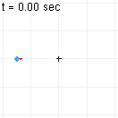

天体同士の間に働く力
天体の運動を計算したい。月は地球の周りをまわっており、地球は太陽の周りをまわっている。これは、月や地球の間に何らかの引力
が働いているからである（働いていなければ速度を変えずに飛び去ってしまう）。この力
の関数形が分かれば、天体の運動が計算できることになる。
地球は月を引き付けているわけだが、地球に引き付けられているのは、何も月だけでなく、地上の物体は全て、その質量に比例して地球の重力で引き付けられる。月も当然質量を持っているはずなので、月に働く引力も重力なのではないだろうか。この仮説の下で議論を進めていくことにしよう（結論から言うとこれは正しい）。そうすれば、実験室での実験によって重力
の法則（＝ニュートンの重力の法則）を求めておけば、それを使って天体の運動を求めることができるはずである。（天体の運動を観測することで
をある程度求めることもできるだろうが、様々に条件を変えて測定するということができないので、十分な情報が得られるか分からない。）
そこでこの章では、まず、「実験室での実験からニュートンの重力の法則を求める方法」と「天体の運動の計算」の2つの節に分けて議論を行う：
ニュートンの重力の法則天体の運動の計算
1.1ニュートンの重力の法則
この節では、重力が式()で与えられることを見る。
重力は質量同士の間に働く
地上にある質量
の物体は、地球から重力
を受ける（
は地上での重力加速度）。では、逆に、この物体
（物体を示す固有名詞としても
を使う）は、地球を引きつけているだろうか。答えはイエスである。例えば、地上に物体
を置いた時の、力のバランスを考えてみればよい。もし、物体
だけが重力
を受けるのであれば、地球と物体
を合わせた系（の重心）は、
の方向に加速してしまう。これは不自然である。実際には、系全体では、力が打ち消しあって加速度を受けないはずである。よって、地球は
の力で物体
に引き付けられていると考えられる。なお、地球と物体が接しているので、接点において互いに拘束力を及ぼしあうが、作用・反作用の法則により、足し合わせると0になる。重力においても、作用・反作用の法則が成り立つということである。
物体と地球が質量に応じて引き合うのだから、物質同士もその質量に比例して引き合うはずである。物体は、その質量に応じて重力を受けるのだから、地球が物体から受ける重力も、地球の質量に依存しているはずである。即ち、質量をもつ者同士の間には重力が働くと考えられる（作用・反作用の法則を満たす）。そうであれば、2つの物体の間に働く重力を測定できれば、重力の関数形が分かり、天体の運動も計算ができそうである。とはいえ、地球という途方もない質量をもってしても、
程度の力にしかならないわけだから、実験室で2つの物体の間に合働く重力を測定するには、非常に小さな力をとらえる工夫が必要だろう。
ニュートンの重力の法則：式()
質量が
の物体を原点においておき、その周りの点
に、質量
の物体を置く。この時、物体
が受ける重力
は、以下のようになることが実験によって知られている：
これを、ニュートンの重力の法則という。ただし、物体
の大きさは十分小さい必要がある（大きいと物体の形状を考慮する必要が出てくる）。定数
を重力定数という。物体
が受ける重力は、
である。
重力は、質量に比例するので、運動方程式
において
が打ち消しあい、加速度
は質量
に依存しないことが分かる。力学編の第1章で述べたガリレイの等価原理は、ここでも成り立っているわけである。また、式()を用いて、地球の質量を見積もることもできる（以下の【1.1-注1】）。
【1.1-注1】地球の質量
地上に置かれた質量
の物体に働く重力
は、重力加速度
を用いて
である（力学編の2.1節）。一方、
は、式()から計算することもできる。注目すべきは、式()が、クーロン力の場合と同じく「距離のマイナス2乗に比例する」形になっていることである。よって、ニュートンの球殻定理が成り立つ（電磁力学の1.4節）。即ち、地球の密度分布が球対称と仮定すれば、地球の形状を無視して、式()がそのまま成り立つ：（
は地球の質量）
は地球の中心を原点としたときの物体
の位置である。
後は、地球半径
、重力加速度
を代入して式()と式()を見比べれば、
を見積もることができる：
この計算は大雑把なものであり、より厳密な値は最後の式のようになる。例えば、地球の密度分布は厳密には球対称ではないし、そもそも、球でもない（地軸方向よりも赤道方向のほうが半径が0.3%程度長い）。また、重力加速度
についても、場所によって0.5%程度違うことに加えて、観測者が地球とともに回転している影響（遠心力）が含まれている。とはいえ、地球の内部がどうなっているか知らずとも、この程度の計算で、地球質量がそれなりに正確に見積もれるというのは興味深いことである。
1.2天体の運動の計算
2つの天体
が互いの重力を受けて運動している場合を考える。
1体問題
一方の天体の質量
が、もう一方の質量
に比べて非常に大きければ、
が受ける重力の影響は無視できる。従って、
が原点に固定されていると考えてよく、
の運動方程式は以下のようになる：
この方程式を、適当な初期条件
のもとで解けば、天体の運動
が計算できる。

数値計算を行うと右図のようになる。
2体問題
2つの天体の質量が同程度の場合には、両方の天体の運動を考慮する必要がある。それぞれの運動方程式は以下のようになる：（
）
そのまま計算してもよいのだが、重力は、作用・反作用の法則を満たすので、以下の【1.2-注1】の式()のように、相対座標を用いた形にすることができる：
即ち、相対座標
は、原点に置かれた質量
の物体の周りを、質量
を持つ物体が回っている場合の運動方程式と同じになる。これと、重心速度が一定という式()を合わせれば、運動
を求めることができる。よって、2体になった場合でも、数学的にはあまり変化がない。
数値計算を行うと右図のようになる。質量比は
となっている。
【1.2-注1】換算質量
2つの物体にかかる力
が、作用・反作用の法則
を満たすとき、これら2つの物体の運動方程式
は、以下の2つの方程式と等価である：
第1式の左辺は重心速度が一定であることを示している（作用・反作用の法則が成り立てばこうなることは力学編で既に述べた）。第2式は、相対座標
に対する運動方程式が
となることを示している。質量が
の物体の運動のように扱えるということである。
を換算質量という。